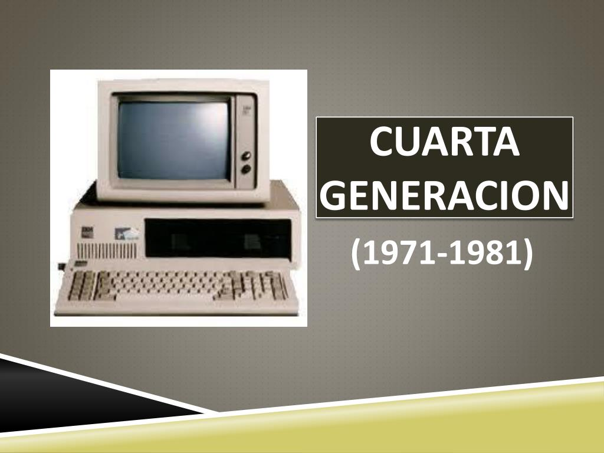

En 1971, Intel creó el primer microprocesador (Intel 4004).
Esta innovación permitió miniaturizar y abaratar las computadoras.
Dio origen a las computadoras personales (PC) y la masificación de la informática.
⚙️ Características principales
Tecnología: Microprocesadores y chips VLSI (alta integración).
Velocidad: Operaciones en nanosegundos/picosegundos.
Tamaño y costo: Mucho más pequeñas y accesibles.
Memoria: RAM y almacenamiento en discos/disquetes.
Software: Aparecen sistemas como MS-DOS, UNIX, y primeras interfaces gráficas.
Lenguajes populares: BASIC, C, Pascal.
Periféricos: Monitores CRT, impresoras de matriz, disquetes, ratón.
🔬 Avances tecnológicos
Microprocesador = CPU en un solo chip.
IBM PC (1981) establece un estándar de arquitectura.
Comienzan las redes locales (LAN).
Mejores gráficos para videojuegos y diseño.
✅ Ventajas
Computadoras personales y portátiles.
Mayor velocidad y menor consumo energético.
Accesibilidad para hogares, escuelas y pequeñas empresas.
Nacimiento de software variado: educativo, comercial, entretenimiento.
⚠️ Limitaciones
Interfaces gráficas primitivas (salvo Xerox Alto).
Memoria y almacenamiento aún limitados.
Conectividad de redes en estado inicial.
Uso común de línea de comandos.
💻 Computadoras destacadas
Intel 4004 (1971): Primer microprocesador.
Altair 8800 (1975): Primera microcomputadora popular.
Apple II (1977): Éxito comercial en hogares y escuelas.
Commodore PET (1977): Todo en uno para educación.
IBM PC (1981): Establece estándar de PCs.
Xerox Alto (1973): Pionera en interfaz gráfica y redes.
🌍 Impacto social y económico
Democratización del acceso a la computación.
Educación en informática en colegios.
Automatización de procesos en empresas.
Origen de comunidades de programadores y videojuegos.
Nacen gigantes como Microsoft y Apple.
